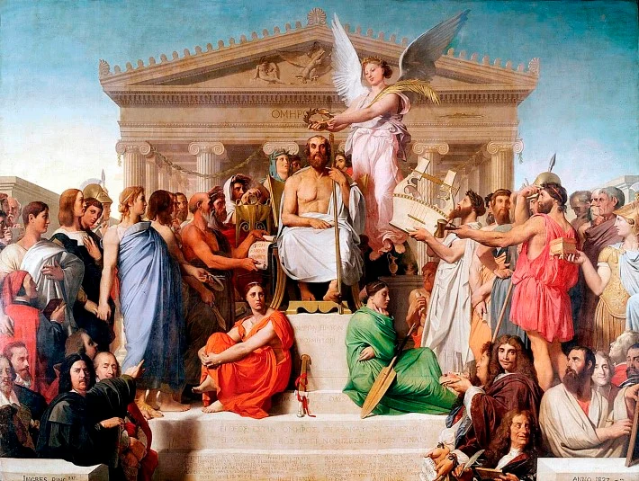
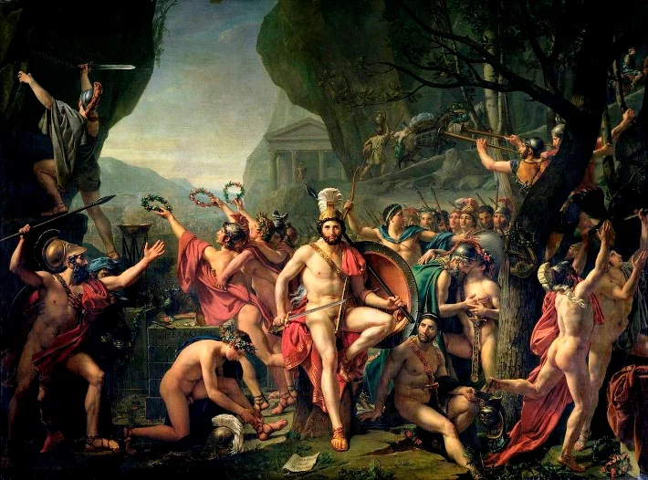
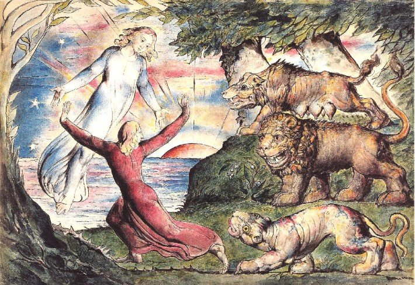

19th Century European Painting: Key Styles & Movements
- Neoclassicism
- Characteristics of Neoclassical painting
- Neoclassical artists of the 19th Century
- Romanticism
- Characteristics of Romantic painting
- Romantic painters of the 19th Century
- The Pre-Raphaelite Brotherhood
- Key characteristics of Pre-Raphaelite painting
- Realism
- Key characteristics of Realism
- Realist painters of the 19th Century
- Impressionism
- Key features of Impressionist paintings
- Impressionist painters of the 19th Century
- Post-Impressionism
- What were the characteristics of Post-Impressionist painting
- Who were some of the most famous Post-Impressionist painters
Neoclassicism: c. 1780-1900
In 1800, at the turn of the 19th Century, Neoclassicism was the dominant style of painting in Europe. The artistic
movement had developed in the 18th Century as part of a larger decorative style that encompassed architecture,
sculpture and the decorative arts.
Neoclassicism became popular after the discovery of the ancient sites of Herculaneum and Pompeii in Italy in the mid-18th Century.
The style took hold in the 1780's in the run-up to the French Revolution and flourished under the Empire of Napoleon I in the early 19th Century
Neoclassical painting lasted until about the 1840's, although many facets of Neoclassicism evolved into and influenced other styles throughout the century, notably at the end of the period with artists including Frederic Leighton (English, 1830-1896) and Sir Lawrence Alma-Tadema (Dutch, 1836-1912).
Characteristics of Neoclassical painting
Neoclassical paintings were derived from subjects of Classical antiquity or involved the painting of contemporary or newly invented compositions in a Classicized style.
Subjects were taken from, or inspired by the Epic – poems and stories from ancient Greece and Rome with a key example being the work of Homer, the Greek writer who penned the Iliad and Odyssey.
The painting shows the ancient writer Homer being crowned by a winged figure representing Victory. Other figures represented in the painting include Dante, Virgil, Raphael and Moliere. Louvre Museum, Paris. © Wikimedia Commons.
Typically, painters in the Neoclassical style attached a great deal of importance to the art of drawing, and so the surface of Neoclassical paintings were entirely smooth and utterly devoid of any brushstrokes.
Paintings were well-delineated – figures were easily distinguishable from shadow and were characteristically well-lit. Any shadows in paintings did not obscure or confuse any elements of the composition, and it the focal point of paintings were made very clear to the viewer.
This rational, proportionate approach to painting represented the French attitude toward the Revolution and the philosophies of the Enlightenment, or the Age of Reason, which called for serious, clear-headed paintings and subjects that celebrated the excellence of natural form.
Neoclassical painting is generally a form of history painting, a genre which traversed many styles but depended on historic subject matter. Ever since the 17th Century, history painting was seen as one of the most important genres in the well-established hierarchy of genres that artists had to conform to since the establishment of the Royal Academy in the 17th Century.
 Leonidas at Thermompylae by Jacques-Louis David, 1814. © Wikimedia Commons.The Royal Academy placed the greatest importance on history painting, which was backward looking and portrayed historic events in a way intended to inspire excellence in the present. Of second-most importance was portraiture, then genre painting, then landscapes. The most lowly painting was thought to be still life.
In many ways, Neoclassicism was similar to the Classical tradition, which had been popular since the Renaissance of the late 15th Century, except it was also politically and socially charged, representing metaphorical allegories that inspired the public and its leaders alike.
Neoclassical artists of the 19th Century
The Oath of the Horatii, a monumentally huge painting, was a success from the very moment it was first exhibited in the Paris Salon, for it symbolised and captured the French spirit in the years before the Revolution in a historic composition.
The painting depicts three brothers preparing to fight for their city, Rome, under the blessing of their father, and the heroic nationalism evident in the subject matter became huge propaganda for the French revolution.
David, a huge supporter of the Revolution, went on to become chief painter to Emperor Napoleon I, and produced a great deal of revolutionary propaganda in the form of Neoclassical paintings.
Jean-Auguste-Dominique Ingres (French, 1780-1867) was another important Neoclassical artist, who was famous for his portraiture as well as his history paintings, through which he sought to exemplify the very best of academic painting.
William-Adolphe Bouguereau (French, 1825-1905)
was another artist that was greatly associated with Neoclassicism, and was a pivotal figure in landscape painting later in the 19th Century.
Romanticism: c. 1750-1890
Like Neoclassicism, Romanticism was part of a larger artistic movement that included literature and architecture as well as painting, originating in Britain in the mid-18th Century.
It wasn't until around 1820 that the movement reached continental Europe, where it existed alongside Neoclassicism until the middle of the 19th Century, when both were finally eclipsed or developed into other styles.
However, unlike Neoclassicism, Romanticism rejected the order and idealisation that Neoclassicism promoted in favour of emphasising the emotional, personal and imaginative aspects of art.
The movement was partly a reaction against the Industrial Revolution, and in some part a reaction against the philosophically logical age of the Enlightenment. It instead favoured intense appreciation of natural beauty, the emotions and the senses over reason and logic.
Romanticism was also influenced by spiritual beliefs, folk culture and an interest in the medieval era, which characterised some of the painting produced during the period.
Characteristics of Romantic painting
Whilst the scope of Romantic painting in terms of subject matter was very broad, favouring emotional depictions, intensely sad and intensely heroic subjects. In terms of their aesthetic, Romantic paintings didn't all look the same. In fact, they can look completely different from one another, because what mattered about this style was the feeling and the emotion – hence why it became known as Romanticism.
Paintings were defined by bold, linear drawing and strong juxtapositions of light and shade. Many Romantic paintings have a sketchy, grainy appearance with a certain softness to them, although this is not true of them all.
 Dante running from the Three Beasts in William Blake's Illustrations to Dante's Divine Comedy: Hell, Canto 1, 1824. © Wikimedia Commons.In England, where Romanticism had been established in the 18th Century, Romantic paintings depicted a range of subjects that included man's relationship to God and his place in the cosmos, as well as history painting, but executed in the Romantic style. Landscape and seascape paintings were also very popular genres.
Later in France, Romanticism adapted and evolved to include the contemporary, and paintings glorified the terror, heroism or sadness of events. It is possible to see the influence of the Neoclassical on French Romantic painting, although the departure in style and motivation is clearly visible.
Romantic painters of the 19th Century
- William Blake (English, 1757-1827), a painter and poet, is a seminal figure in Romantic painting, and is known for his distinctive illustrations and works in watercolour which created imaginary worlds inspired by gods and mystical powers, as well as famous writers including Dante and Shakespeare.
- Theodore Gericault (French, 1791-1824) was another painter who had a huge impact on both Romanticism and the entire history of French painting. Unlike Blake, Gericault preferred to paint contemporary subjects focussing on the darker elements of human psychology.
- Eugene Delacroix (French, 1798-1863) is often considered to be the leader of Romanticism in France. Like Gericault, he preferred contemporary subjects, of which he heightened the emotion and, naturally, the romance.